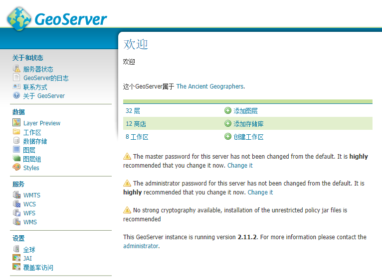
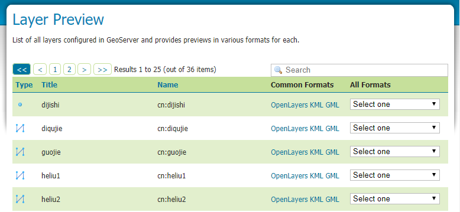
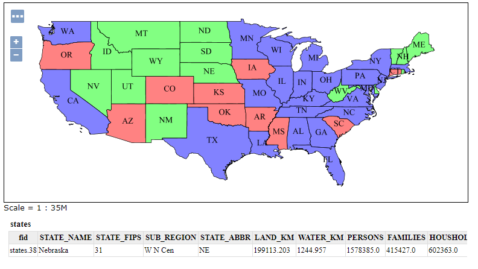

Web管理界面简介
在安装GeoServer中讲到，安装完成后浏览http://localhost:8080/geoserver
(或者安装时设置的其他端口号)就能进入Web管理界面。在右上角输入用户名和密码（默认为 admin/geoserver）就可以登陆管理程序。

服务器状态 在这里可以看到服务器的常用参数，数据目录，内存占用，JAI环境参数等。
Layer Preview 图层预览，查看当前的可用图层，数据类型，图层工作区，图层名等，并且可以点击
OpenLayers预览图层。

在预览地图中点击要素还能得到要素属性信息。

工作区 工作区是一个服务的数据集合，一个工作区对应一个服务，一个工作区可以含有多个数据图层，图层组。
数据存储 数据存储链接服务器上的实际数据文件，如
.shp，瓦片地图等，为图层提供数据源。图层 单个数据源对应一个图层，往往将同一类要素放在一个图层，分多个图层存储GIS数据，如建筑，河流，湖泊等。
图层组 将多个图层整合在一起，统一显示，用于地图配置方案，将所需的图层结合在一起，以一个图层组的形式发布。
Styles 包含可用的样式，每个样式都是一个配置文件，可以针对性的调整不同数据类型的显示样式，还提供针对地理信息数据特有的过滤器。 样式最终应用于图层或图层组，一个图层或图层组可以有多个样式，但是通常为每个图层配置一个样式。
服务 不同的服务对应的设置，若需要特别设置可以针对性的为某个服务进行设置。